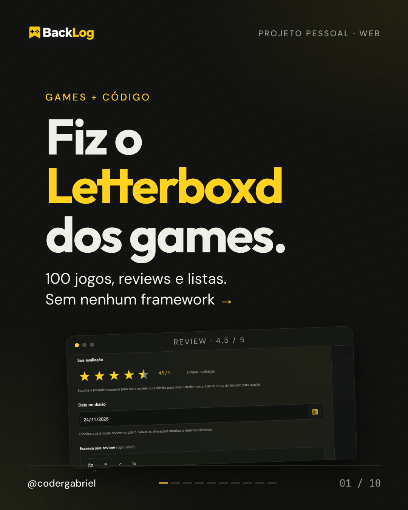
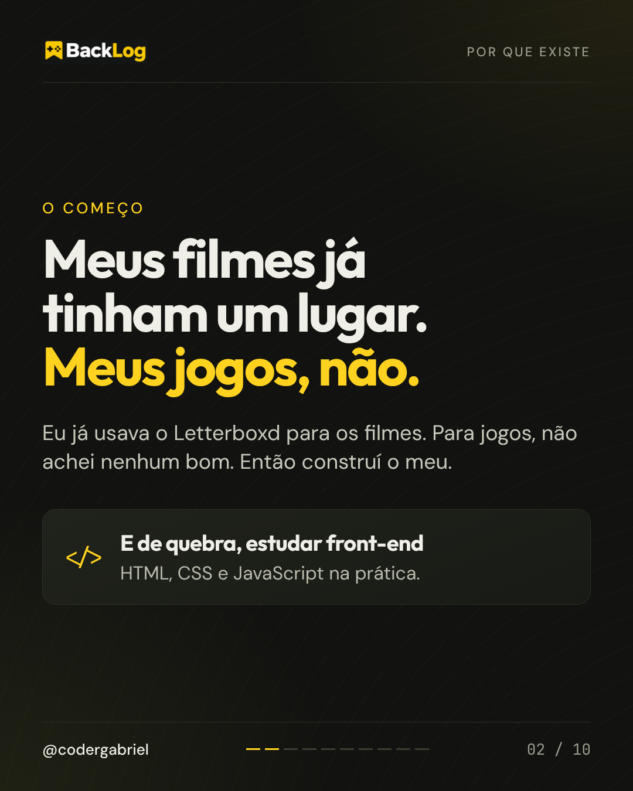
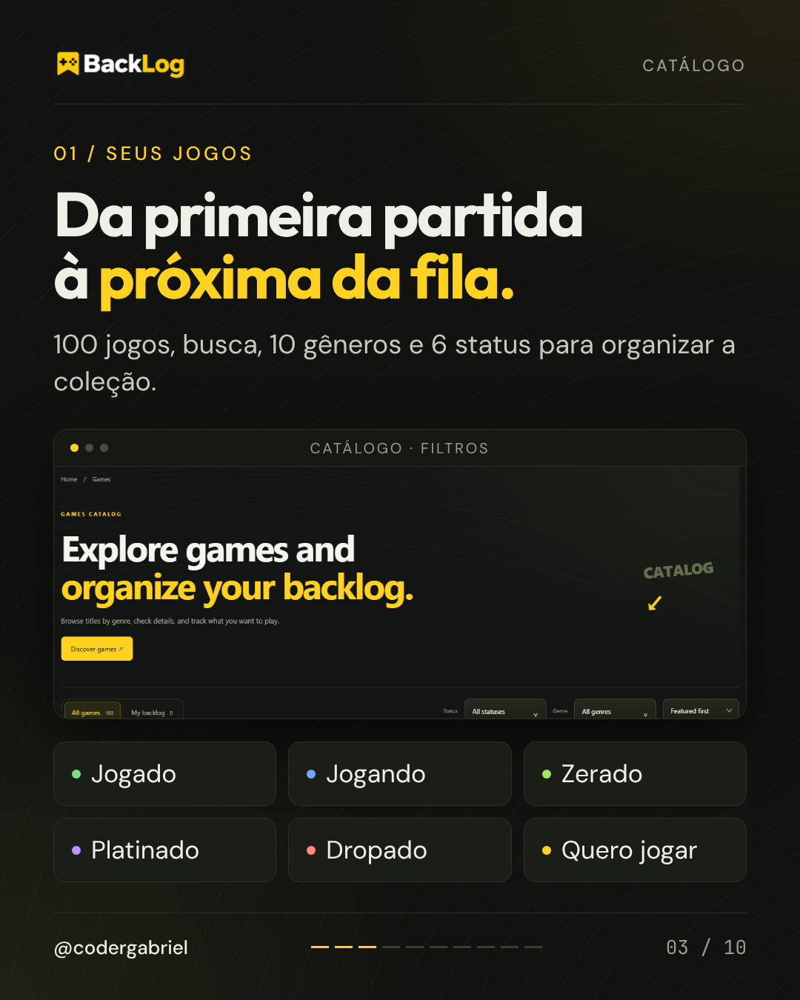
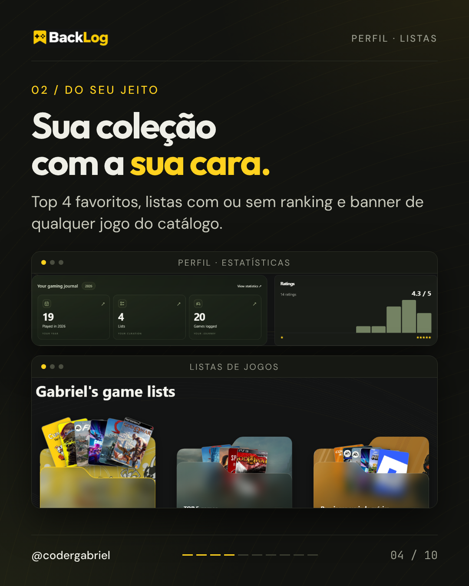
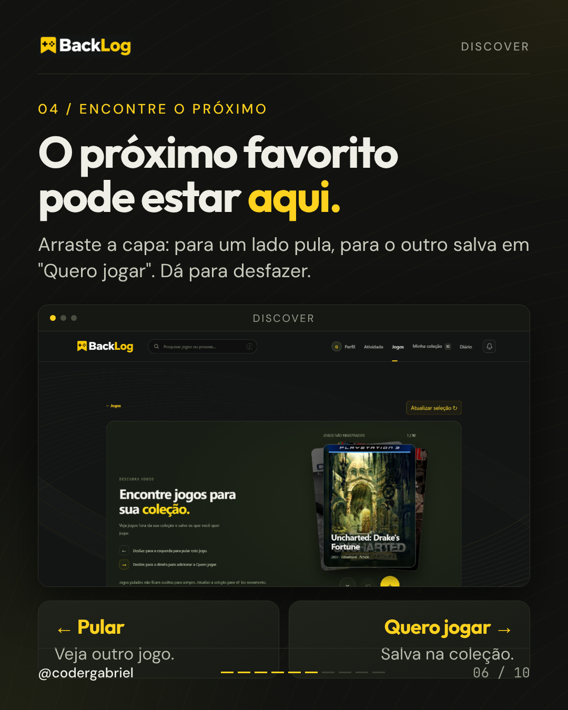
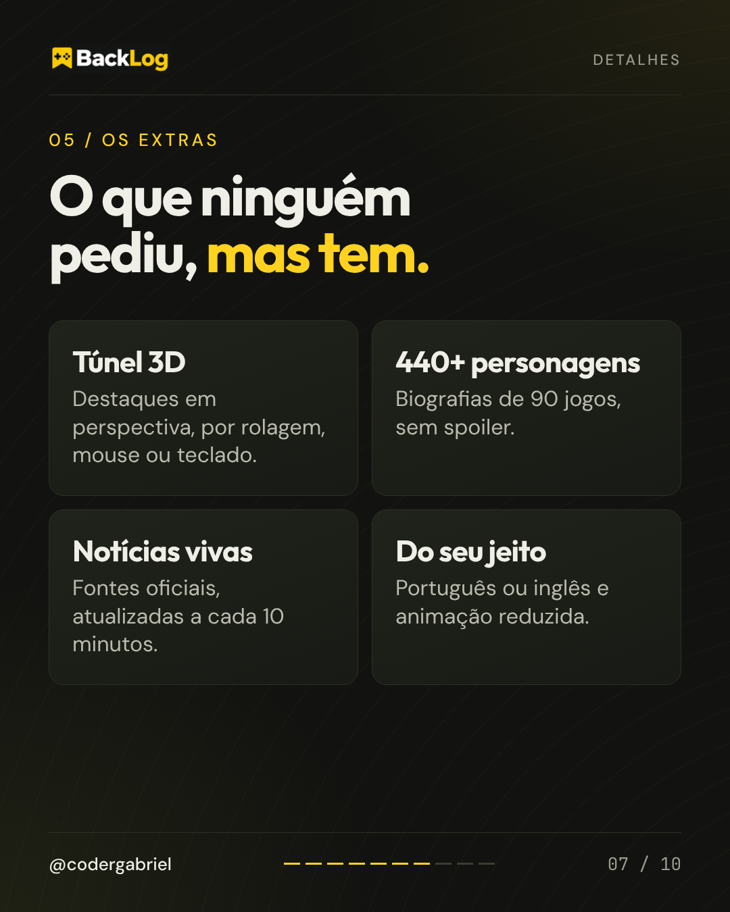
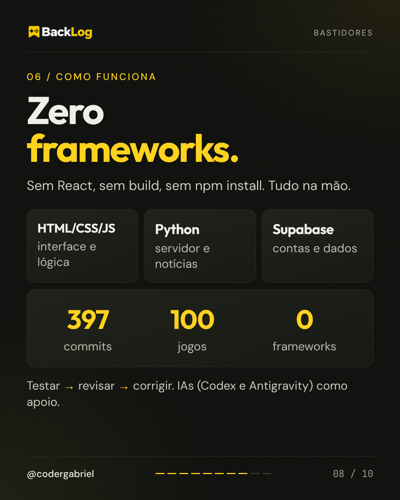
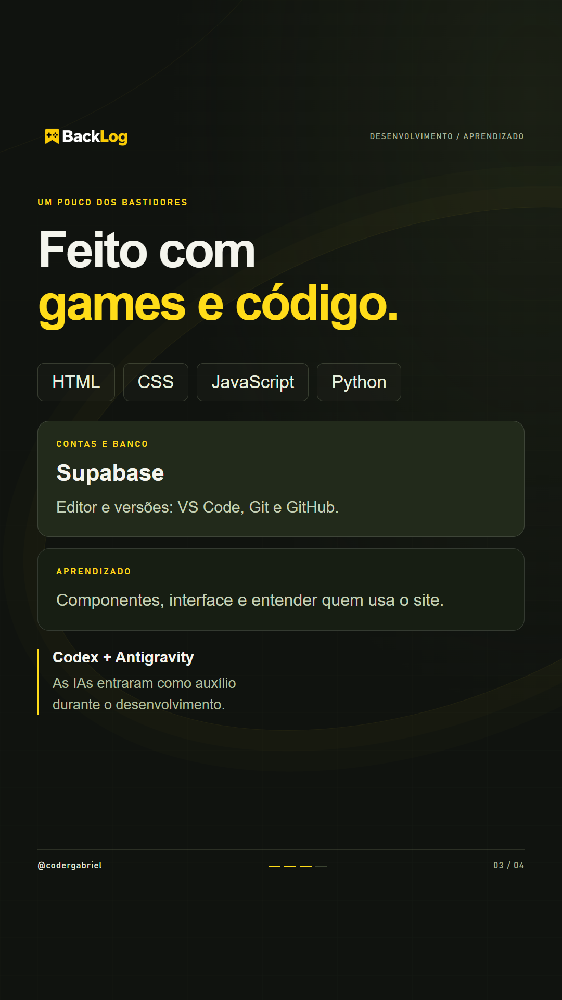
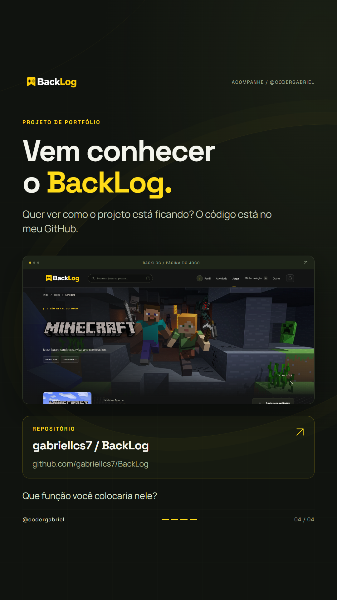

backlog_01.png · Apresentação do projeto

backlog_01.png · Apresentação do projeto

backlog_02.png · Por que o projeto existe

backlog_03.png · Catálogo e status

backlog_04.png · Perfil e listas
backlog_05.png · Reviews e diário

backlog_06.png · Discover

backlog_07.png · Detalhes e extras

backlog_08.png · Tecnologias e bastidores
backlog_09.png · Resumo do projeto
backlog_10.png · Convite para comentar

01-conheca.png

02-funcoes.png

03-bastidores.png

04-codigo.png